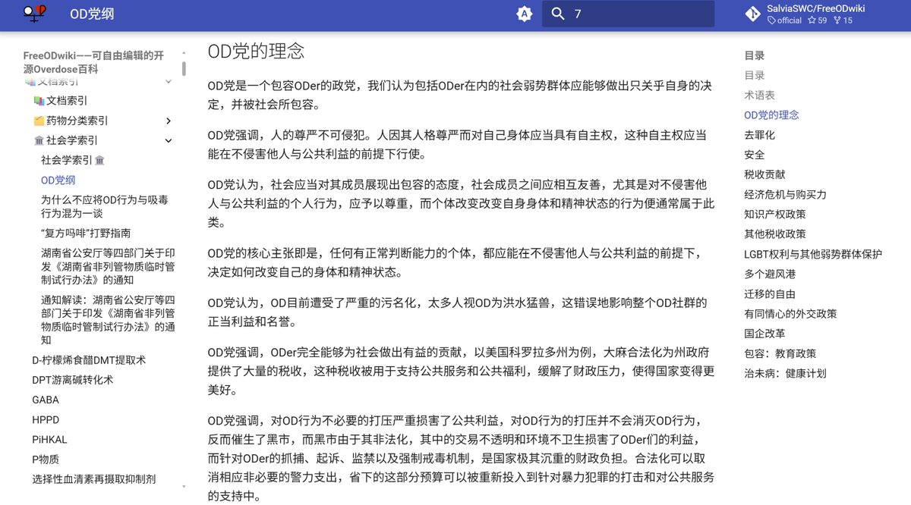

RT @SalviaSWC: 真诚地感谢@Cbscfe 把 @LibertyU36 所作的《中推OD党党纲（征求意见稿）》发布在了网站上🥰
不管你是什么身份的人，都来欢迎你来看看，来了解我们的理念和纲领哦🥹网址： https://t.co/jE22okLdnd
#中推模拟选举…

不管你是什么身份的人，都来欢迎你来看看，来了解我们的理念和纲领哦🥹网址： https://t.co/jE22okLdnd
#中推模拟选举…

真诚地感谢@Cbscfe 把 @LibertyU36 所作的《中推OD党党纲（征求意见稿）》发布在了网站上🥰
不管你是什么身份的人，都来欢迎你来看看，来了解我们的理念和纲领哦🥹网址：https://t.co/jE22okLdnd
#中推模拟选举 #OD党 https://t.co/PbmmIqUav9
不管你是什么身份的人，都来欢迎你来看看，来了解我们的理念和纲领哦🥹网址：https://t.co/jE22okLdnd
#中推模拟选举 #OD党 https://t.co/PbmmIqUav9